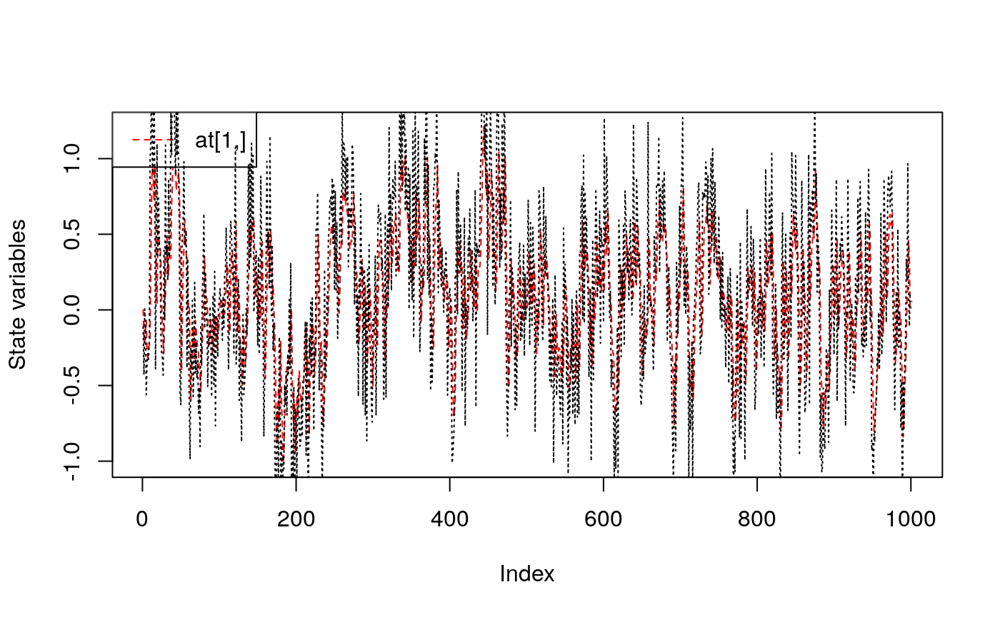
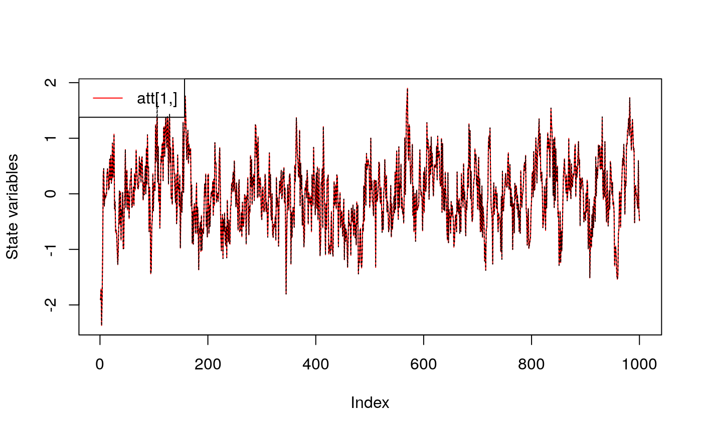
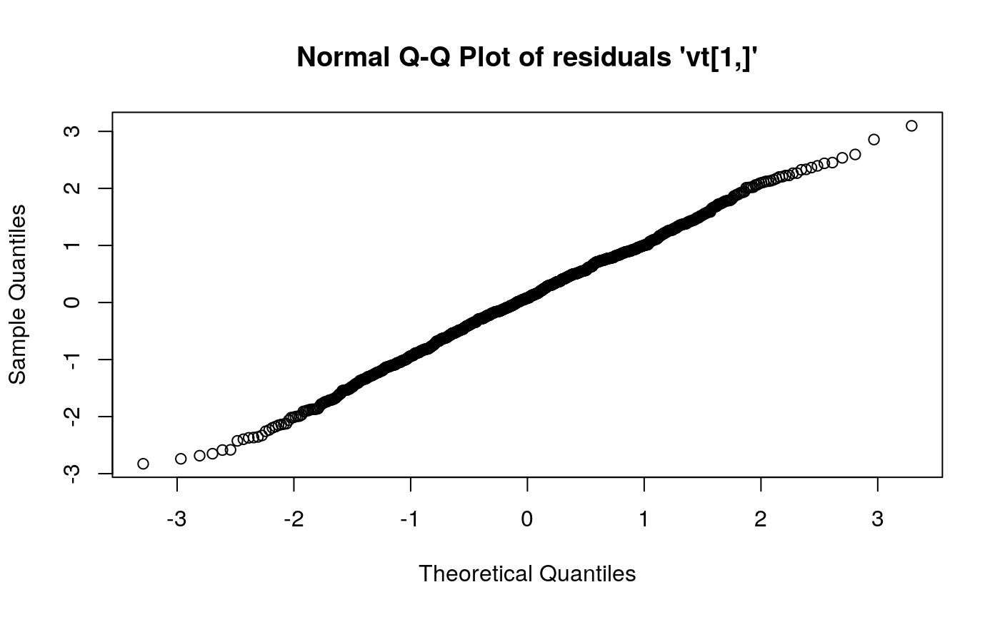
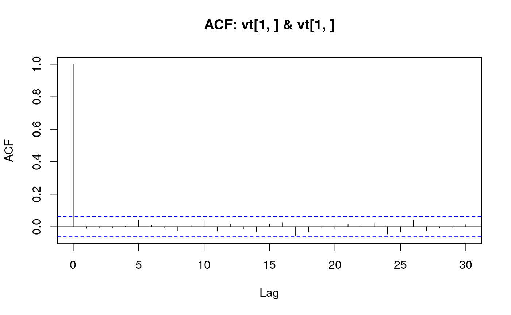
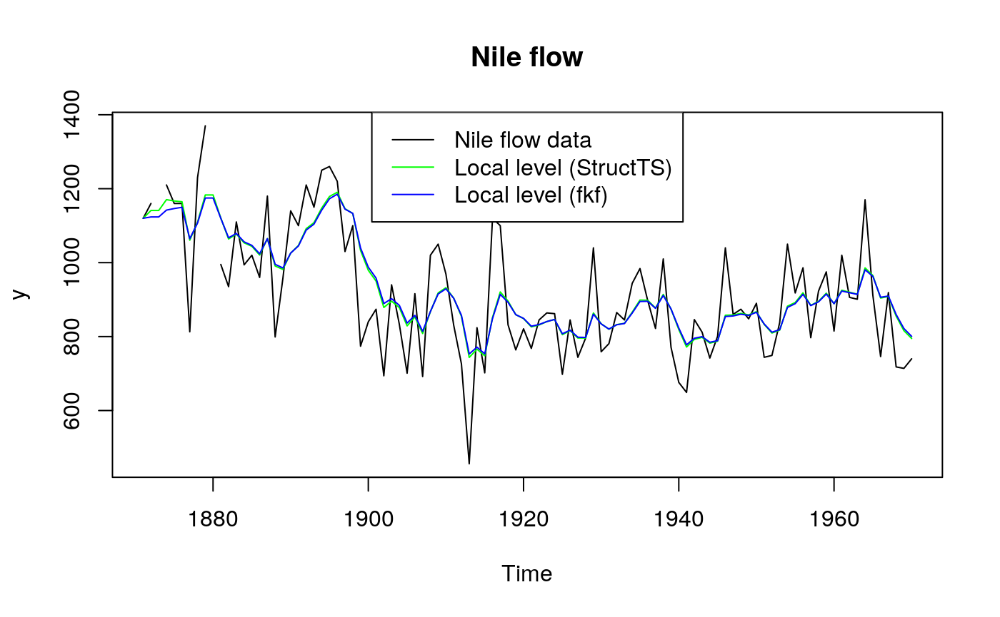
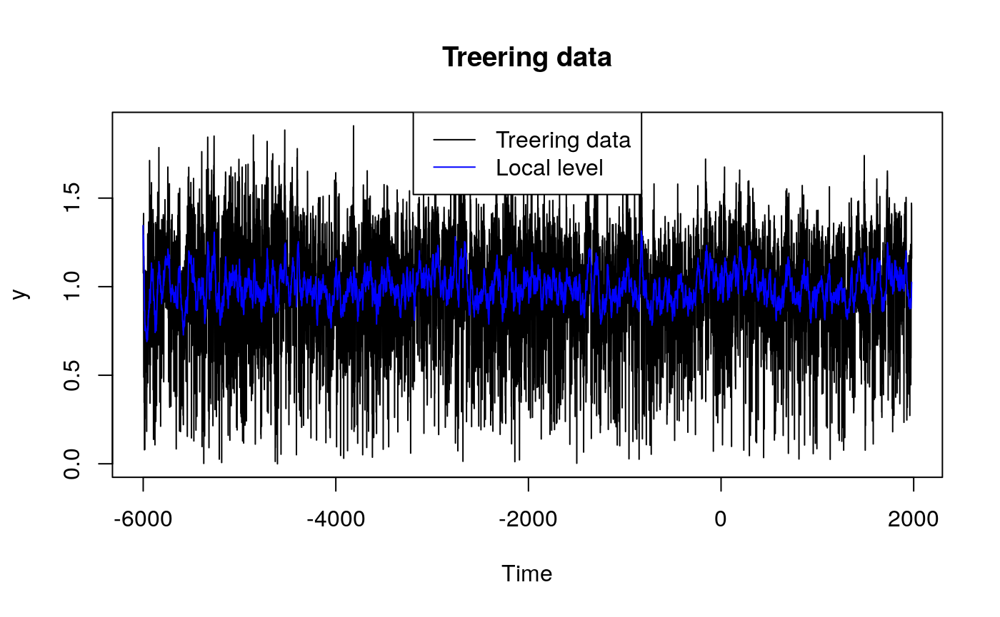
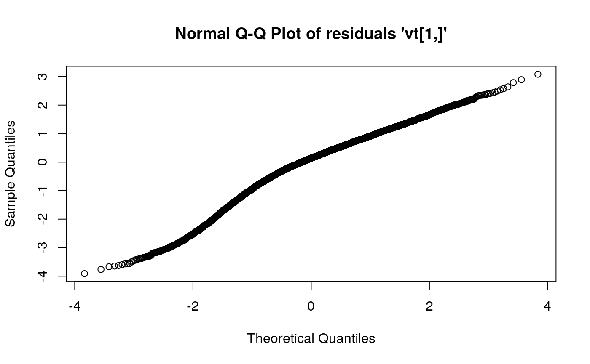
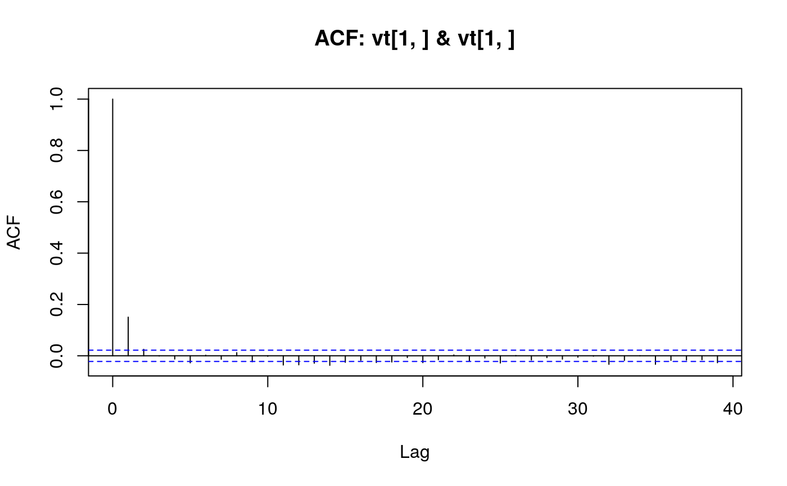

library('FKF')
This example shows how to fit an ARMA(2, 1) model using this Kalman filter implementation (see also stats’ makeARIMA and KalmanRun).
Set the length of the series and parameters
n <- 1000 ## Set the AR parameters ar1 <- 0.6 ar2 <- 0.2 ma1 <- -0.2 sigma <- sqrt(0.2)
Sample from an ARMA(2, 1) process
Create a state space representation out of the four ARMA parameters
arma21ss <- function(ar1, ar2, ma1, sigma) { Tt <- matrix(c(ar1, ar2, 1, 0), ncol = 2) Zt <- matrix(c(1, 0), ncol = 2) ct <- matrix(0) dt <- matrix(0, nrow = 2) GGt <- matrix(0) H <- matrix(c(1, ma1), nrow = 2) * sigma HHt <- H %*% t(H) a0 <- c(0, 0) P0 <- matrix(1e6, nrow = 2, ncol = 2) return(list(a0 = a0, P0 = P0, ct = ct, dt = dt, Zt = Zt, Tt = Tt, GGt = GGt, HHt = HHt)) }
The objective function passed to ‘optim’
objective <- function(theta, yt) { sp <- arma21ss(theta["ar1"], theta["ar2"], theta["ma1"], theta["sigma"]) ans <- fkf(a0 = sp$a0, P0 = sp$P0, dt = sp$dt, ct = sp$ct, Tt = sp$Tt, Zt = sp$Zt, HHt = sp$HHt, GGt = sp$GGt, yt = yt) return(-ans$logLik) } theta <- c(ar = c(0, 0), ma1 = 0, sigma = 1) fit <- optim(theta, objective, yt = rbind(a), hessian = TRUE) fit #> $par #> ar1 ar2 ma1 sigma #> 0.6003460 0.2152655 -0.1828381 0.4545893 #> #> $value #> [1] 638.3345 #> #> $counts #> function gradient #> 459 NA #> #> $convergence #> [1] 0 #> #> $message #> NULL #> #> $hessian #> ar1 ar2 ma1 sigma #> ar1 2536.401385 1942.245141 1134.7943326 3.4585628 #> ar2 1942.245141 2536.336121 212.2483388 3.7383349 #> ma1 1134.794333 212.248339 1056.0706567 0.9922729 #> sigma 3.458563 3.738335 0.9922729 9685.1568918
## Confidence intervals rbind(fit$par - qnorm(0.975) * sqrt(diag(solve(fit$hessian))), fit$par + qnorm(0.975) * sqrt(diag(solve(fit$hessian)))) #> ar1 ar2 ma1 sigma #> [1,] 0.4339107 0.09431138 -0.35013547 0.4346736 #> [2,] 0.7667814 0.33621966 -0.01554074 0.4745050 ## Filter the series with estimated parameter values sp <- arma21ss(fit$par["ar1"], fit$par["ar2"], fit$par["ma1"], fit$par["sigma"]) ans <- fkf(a0 = sp$a0, P0 = sp$P0, dt = sp$dt, ct = sp$ct, Tt = sp$Tt, Zt = sp$Zt, HHt = sp$HHt, GGt = sp$GGt, yt = rbind(a)) ## Compare the prediction with the realization plot(ans, at.idx = 1, att.idx = NA, CI = NA) lines(a, lty = "dotted")

## Compare the filtered series with the realization plot(ans, at.idx = NA, att.idx = 1, CI = NA) lines(a, lty = "dotted")

## Check whether the residuals are Gaussian plot(ans, type = "resid.qq")

## Check for linear serial dependence through 'acf' plot(ans, type = "acf")

## Transition equation: ## alpha[t+1] = alpha[t] + eta[t], eta[t] ~ N(0, HHt) ## Measurement equation: ## y[t] = alpha[t] + eps[t], eps[t] ~ N(0, GGt) y <- Nile y[c(3, 10)] <- NA # NA values can be handled ## Set constant parameters: dt <- ct <- matrix(0) Zt <- Tt <- matrix(1) a0 <- y[1] # Estimation of the first year flow P0 <- matrix(100) # Variance of 'a0' ## Estimate parameters: fit.fkf <- optim(c(HHt = var(y, na.rm = TRUE) * .5, GGt = var(y, na.rm = TRUE) * .5), fn = function(par, ...) -fkf(HHt = matrix(par[1]), GGt = matrix(par[2]), ...)$logLik, yt = rbind(y), a0 = a0, P0 = P0, dt = dt, ct = ct, Zt = Zt, Tt = Tt, check.input = FALSE) ## Filter Nile data with estimated parameters: fkf.obj <- fkf(a0, P0, dt, ct, Tt, Zt, HHt = matrix(fit.fkf$par[1]), GGt = matrix(fit.fkf$par[2]), yt = rbind(y)) ## Compare with the stats' structural time series implementation: fit.stats <- StructTS(y, type = "level") fit.fkf$par #> HHt GGt #> 1385.066 15124.131 fit.stats$coef #> level epsilon #> 1599.452 14904.781 ## Plot the flow data together with fitted local levels: plot(y, main = "Nile flow") lines(fitted(fit.stats), col = "green") lines(ts(fkf.obj$att[1, ], start = start(y), frequency = frequency(y)), col = "blue") legend("top", c("Nile flow data", "Local level (StructTS)", "Local level (fkf)"), col = c("black", "green", "blue"), lty = 1)

## Local level model for the treering width data. ## Transition equation: ## alpha[t+1] = alpha[t] + eta[t], eta[t] ~ N(0, HHt) ## Measurement equation: ## y[t] = alpha[t] + eps[t], eps[t] ~ N(0, GGt) y <- treering y[c(3, 10)] <- NA # NA values can be handled ## Set constant parameters: dt <- ct <- matrix(0) Zt <- Tt <- matrix(1) a0 <- y[1] # Estimation of the first width P0 <- matrix(100) # Variance of 'a0' ## Estimate parameters: fit.fkf <- optim(c(HHt = var(y, na.rm = TRUE) * .5, GGt = var(y, na.rm = TRUE) * .5), fn = function(par, ...) -fkf(HHt = matrix(par[1]), GGt = matrix(par[2]), ...)$logLik, yt = rbind(y), a0 = a0, P0 = P0, dt = dt, ct = ct, Zt = Zt, Tt = Tt, check.input = FALSE) ## Filter Nile data with estimated parameters: fkf.obj <- fkf(a0, P0, dt, ct, Tt, Zt, HHt = matrix(fit.fkf$par[1]), GGt = matrix(fit.fkf$par[2]), yt = rbind(y)) ## Plot the width together with fitted local levels: plot(y, main = "Treering data") lines(ts(fkf.obj$att[1, ], start = start(y), frequency = frequency(y)), col = "blue") legend("top", c("Treering data", "Local level"), col = c("black", "blue"), lty = 1)

## Check the residuals for normality: plot(fkf.obj, type = "resid.qq")

## Test for autocorrelation: plot(fkf.obj, type = "acf", na.action = na.pass)
